BIO26-S03-03 | الأبواغ الداخلية ليست تكاثرًا
زيادة عدد البكتيريا تحدث بالانشطار؛ البوغ الداخلي يحفظ بقاء الخلية.
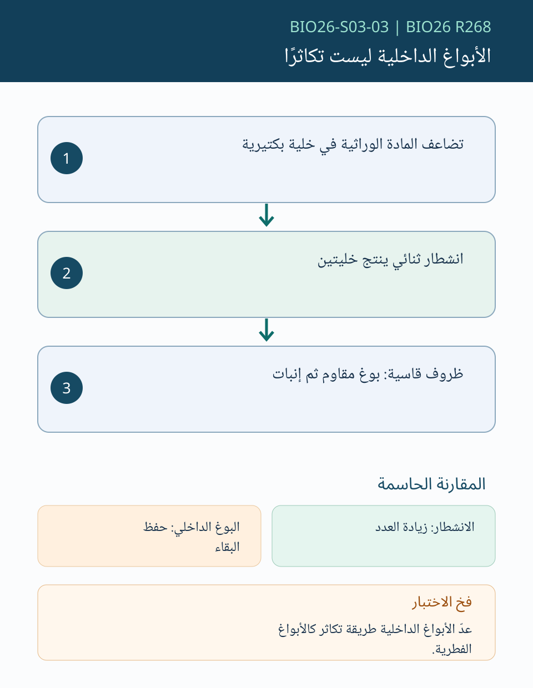
12 بطاقة تشخيصية أصلية، 24 سؤالًا مشروحًا. للمراجعة فقط، غير منشورة.
زيادة عدد البكتيريا تحدث بالانشطار؛ البوغ الداخلي يحفظ بقاء الخلية.

التحلل ينتج جسيمات فيروسية ويؤذي الخلية، والكمون يبقي الجينوم دون إنتاج فوري كثيف.
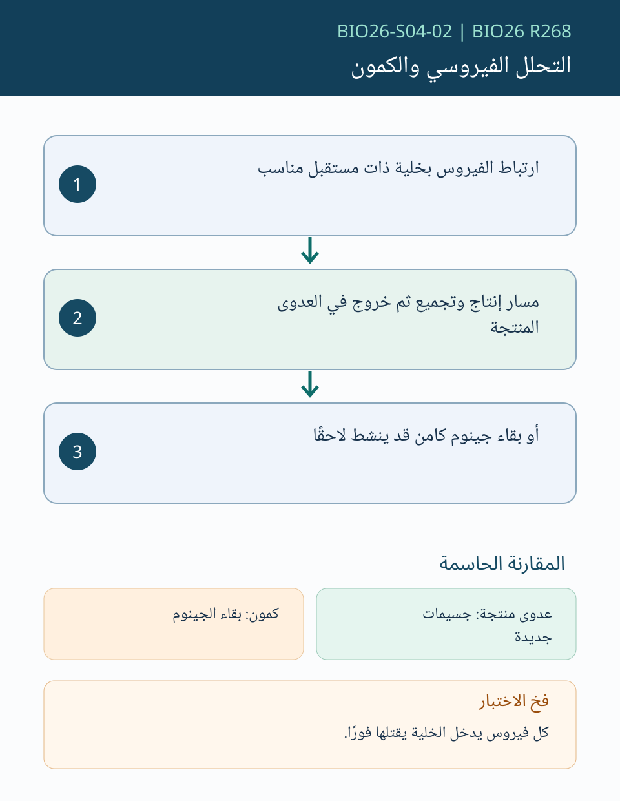
الطوران شكلان بنيويان مختلفان، ولا يجتمعان بالضرورة في دورة حياة كل نوع.
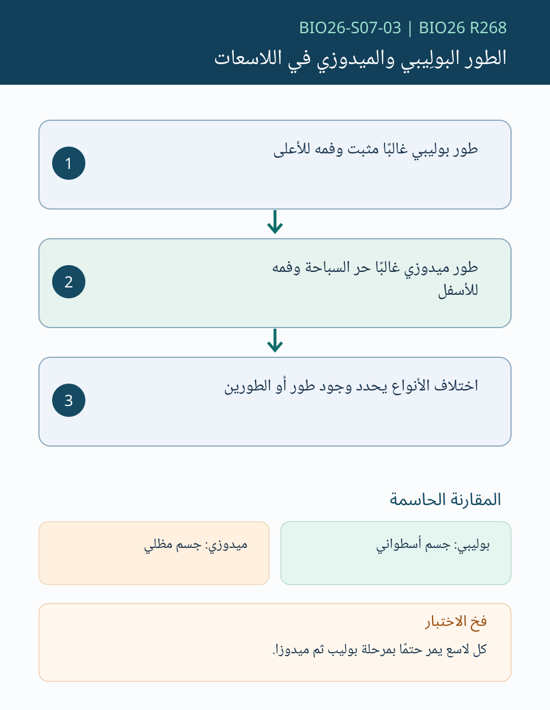
قد تكون اليرقة ثنائية التناظر بينما يصبح البالغ خماسي التناظر الشعاعي.
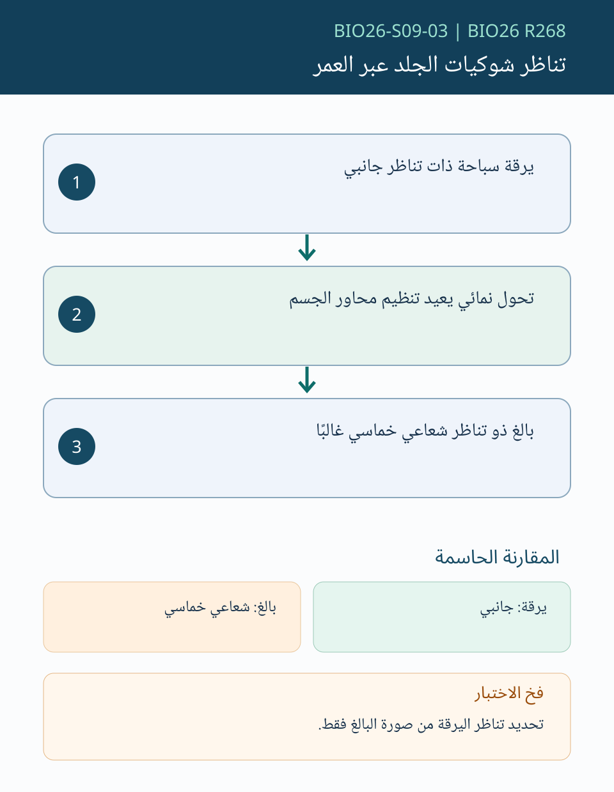
أغشية الجنين تقلل الاعتماد على الماء الخارجي للتكاثر، ولا تعني أن كل الأمنيونيات تضع البيض.
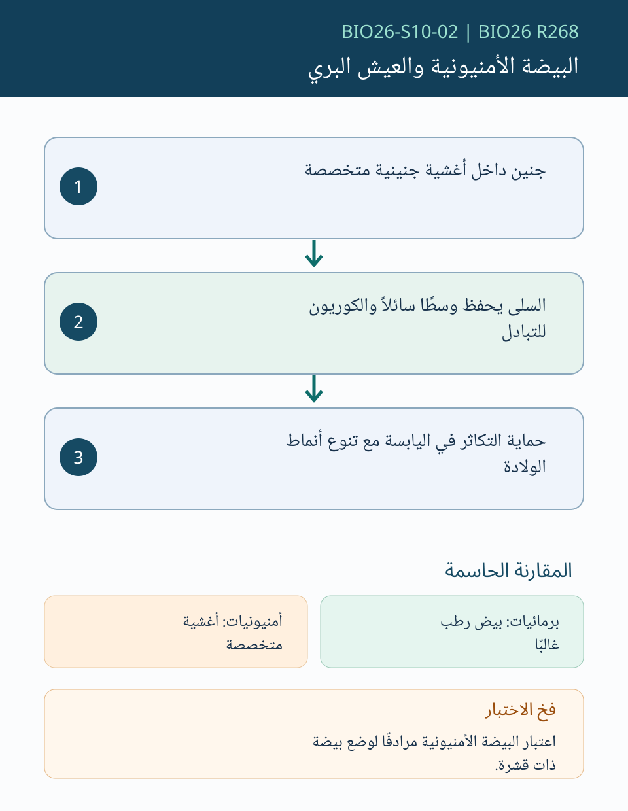
التلقيح نقل حبوب اللقاح، أما الإخصاب فهو اتحاد الجاميتات بعد نمو أنبوب اللقاح.
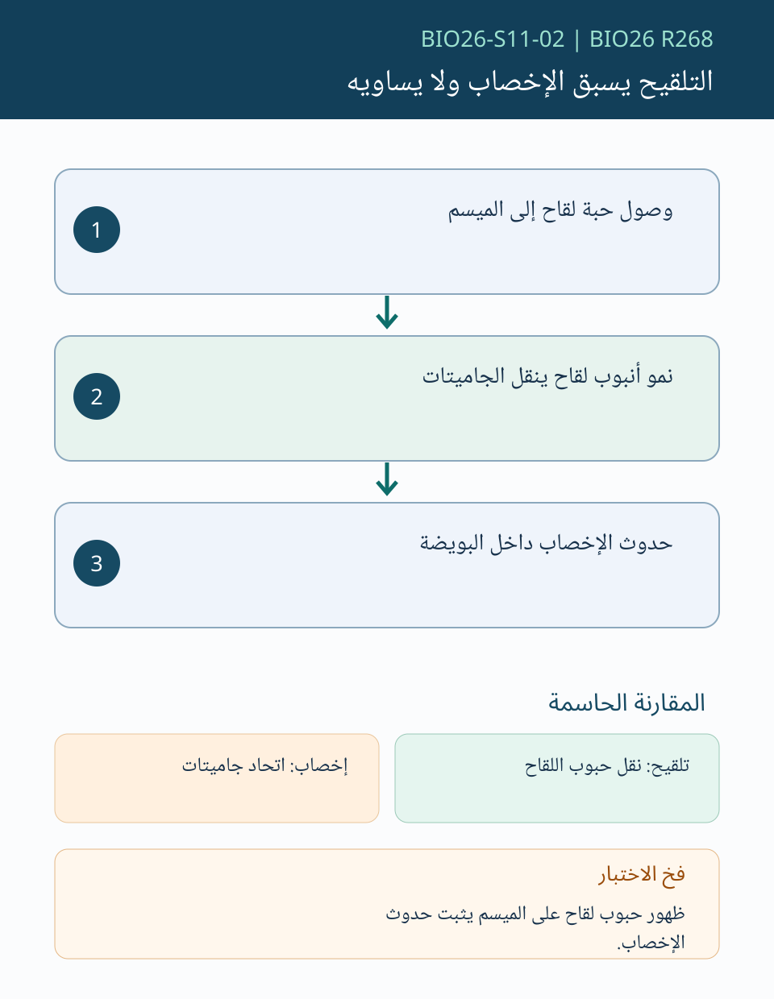
اتجاه اللحاء يحدده موضع المصدر والمصرف، وليس قاعدة ثابتة للأعلى أو الأسفل.
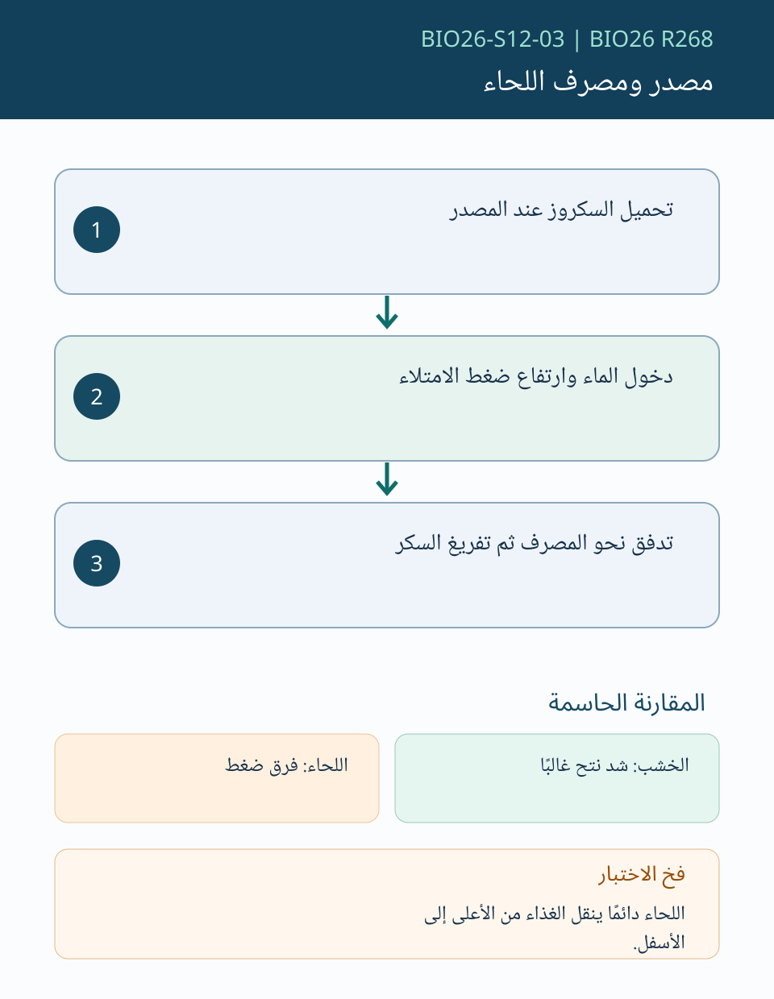
اتحاد أول يصنع الجنين، واتحاد ثان يصنع النسيج الغذائي في مغطاة البذور.
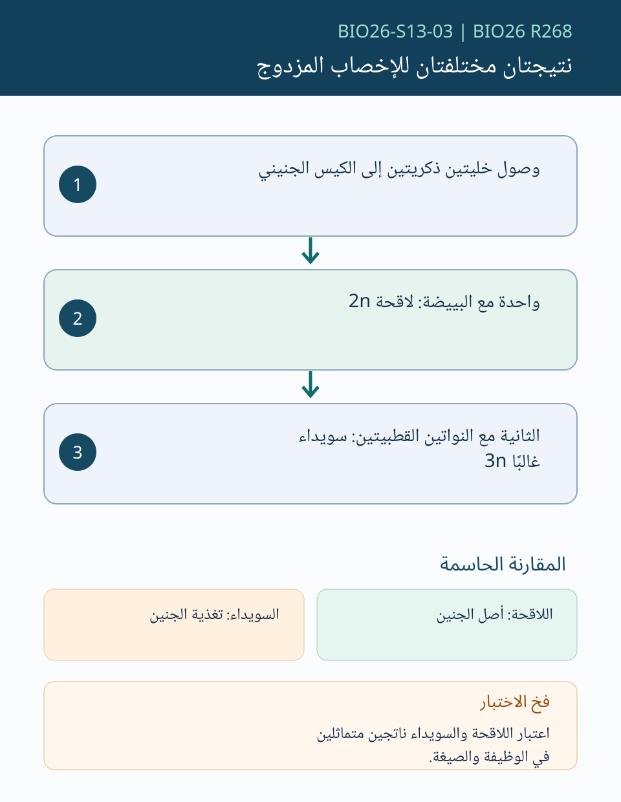
فصيلة ABO تُفهم بفصل ما على سطح الكرية عما في البلازما.
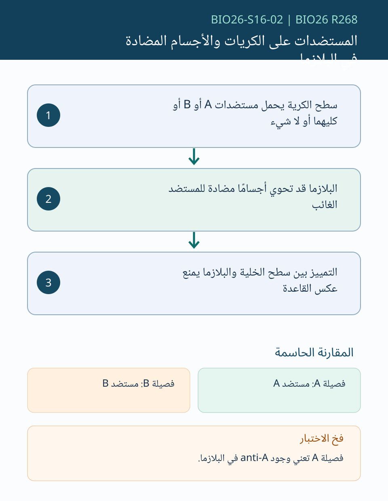
ارتفاع الإستروجين المستمر قبل الإباضة يمهد لاندفاع LH، وبعدها يرتفع البروجستيرون.
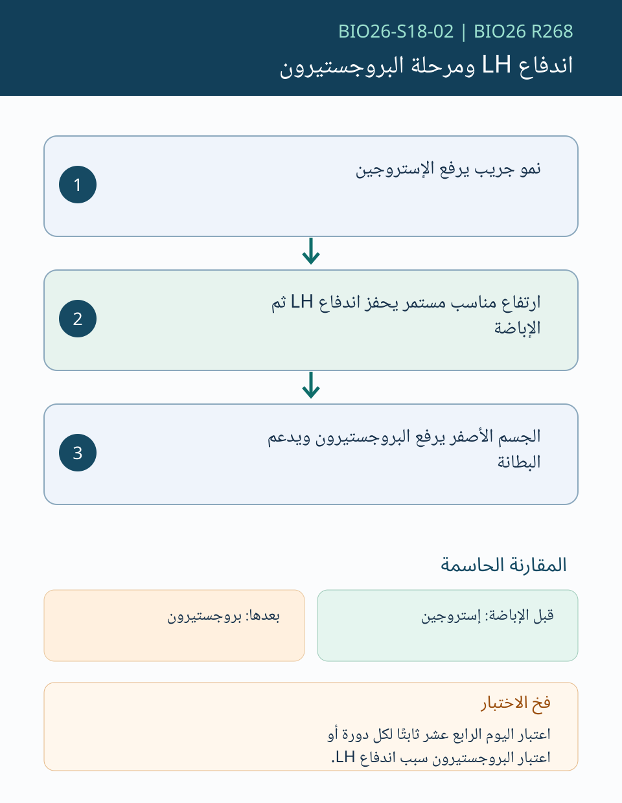
النشطة تنشئ استجابة وذاكرة لدى الجسم، والسلبية تنقل أجسامًا مضادة جاهزة مؤقتًا.
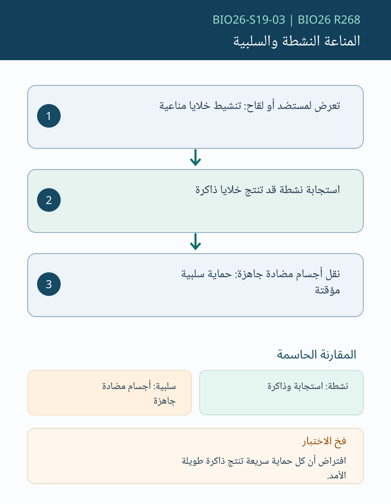
الماء يتحرك صافيًا نحو الجهد المائي الأقل عبر غشاء يسمح بمروره.
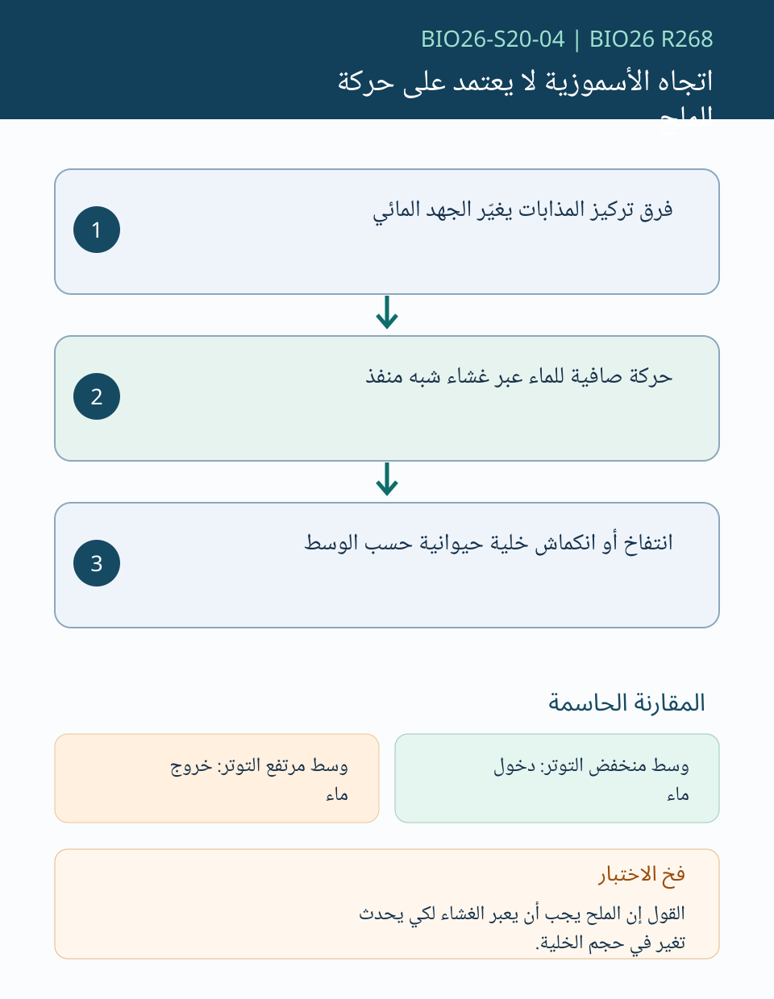